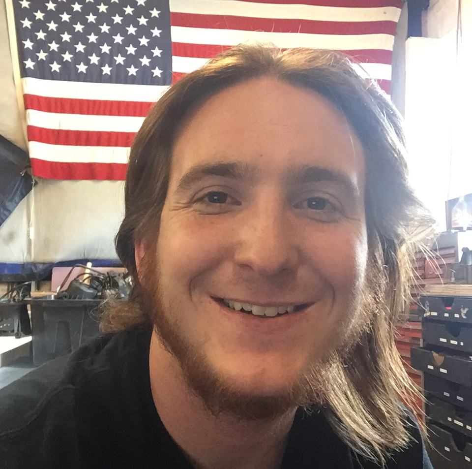

BOURBON PURSUIT
PURSUIT
a podcast featuring interviews with people making the bourbon industry happen


-
EPISODE
035
02.06.16
32:33

Seth Thompson, of The Bourbon Classic, chats about all the awesome events being held from Feb 23-27th, 2016 and how you can get last second tickets. Read Show Notes
- Tell us your story of how you got into bourbon?
- If your house is on fire, what’s the one bottle you grab?
- Give the high level pitch of The Bourbon Classic
- How has the event grown over the years?
- Let’s dive into the events. Talk about the key events on Friday and Saturday
- It’s awesome because consumers can take away knowledge about food pairings
- It looks like Saturday is the big day. Friday is the pre-game. Talk Saturday’s all day extravaganza
- Bourbon and ham pairings sound very intriguing
- If you’re coming from out of town, you can learn about Louisville’s Whiskey Row in a session with Mike Veach. Talk about that.
- Talk about The Classic Taste
- How much are tickets and how many are left?
- Talk about all the events leading up to the main events on Friday and Saturday
- Talk about the Van Winkle event that is sold out
- What are the added benefits of VIP tickets?
- Talk about the brands and distilleries that are going to be a part of the event.
- Any ideas for the 2017 event?

-
EPISODE
034
02.05.16
27:06
Chad Hartsfield, Owner of ReWicked Candles, discusses the process of turning old bourbon bottles into works of art. Read Show Notes
- Tell us your story of how you got into bourbon?
- Tell us about ReWicked Candles.
- What was the inspiration?
- How do you get around legal issues with brand names?
- Explain to us the process.
- How do you experiment with the scents in the wax?
- Where do you get all your bottles?
- What’s the reaction you get from bars or distilleries when you’re asking for empty bottles?
- How do you plan on keeping up with demand?
- Talk about the light fixtures and display cases your getting into
- What are you always on the look for when your picking or hunting?
- When did you start collecting bourbon?
- Any tips for dusty hunters?
- Do you barter for higher-end empty bottles?
- Where can people buy your products? Etsy Shop or chad@rewickedcandles.com
- Lets talk about the cost of the candles.
- What are the most popular candles?


-
EPISODE
033
01.19.16
31:12

Greg Davis, Master Distiller at Maker’s Mark, talks about how is continuing the tradition that has been set and more about day to day operations. Read Show Notes
- Today. we go on-site to Loretto to Maker’s Mark Distillery
- Breaking News: Users claim there is a bad batch of 2015 Elmer T. Lee. Barrels 256, 264, 266 and 267 are the “defective” barrels but Buffalo Trace has already responded.
- Tell us about your story
- What was your background before coming to Maker’s Mark?
- What are some of the key things you remember from your mentorship?
- Can you talk about your wheated mash bill and how it came to be?
- Talk about the difference between Makers and Makers 46
- Why go with French Oak?
- Are there other kinds of experimentation going on?
- Talk about the motivation behind the Cask Strength offering
- Talk about what you are doing different with your barrels compared to others
- How do you pick the barrels that are going into the batch?
- Do you sample every barrel?
- Are you able to go to different warehouses and taste the difference?
- How do you detect “must”?
- Can you explain what still you have and why you prefer it?
- What is the average bottle count that comes out of Makers?

-
EPISODE
032
12.17.15
37:15

Erik of @BourbonSeason joins the show to talk about the infamous bottle chase and the growing secondary market. Read Show Notes
- Before we get started, there is a new December release coming from Kentucky Owl so be on the lookout for red, blue, and green ink bottles soon.
- Erik, how did you get into bourbon?
- Tell us what you do with your twitter handle, @BourbonSeason
- There’s a lot of ways to get allocated bourbons, have you found a good formula for getting special release bourbons?
- Have you seen special hunting groups that have formed?
- Have you seen more camp out situations in other parts of the country?
- There’s camping, lotteries, and being a "best" customer but is there a fair way to distribute allocated bottles?
- In Louisville the secondary market is starting to take its effect. Small shops are selling bottles for secondary prices. Are you seeing this in other parts of the country as well?
- When you think about the secondary market there are fingers to point. Are people flipping the bottles or buying the bottles the culprit of the problem?
- How do you feel about seeing the flipper "crotch shot"?
- Some people on forums are selling 2 or 3 full verticals of Pappy or BTAC, so how are these people feeding the secondary market?
- In Louisville, we have a few restaurants that have fantastic selections, but they are price gouging. No question about it. Do you see restaurants as contributing to the secondary market as well?
- Are the distilleries going to start charging more to combat and make more money for themselves?
- This week, Buffalo Trace sent out an email responding to the mass inquiries about secondary market pricing and they intend on trying to shut down secondary markets. Can Buffalo Trace successfully shut it down?
- Would you like to see Buffalo Trace crack down on stores and restaurants that price gouge since the three-tier system is the only way a consumer can get a bottle?
- Quick PSA on breaking your empty bottles
- Is there such a thing as “bourbon karma”?
-
EPISODE
031
12.15.15
41:36

Reid Mitenbuler (@ReidMitenbuler), author of Bourbon Empire, joins Ryan and Kenny to talk about the history and psyche of bourbon, "a distinctive product of the United States". Read Show Notes
- The Frazier Museum has a new Prohibition exhibit that will become a new or even a first stop on the Kentucky Bourbon Trail.
- Reid, what’s your coming to age tale of bourbon?
- What made you so fascinated that you took the time to become an author on the subject?
- Talk about the misquote of bourbon being a “distinctive product of the United States”.
- Talk about the beginning with the “Big Bang of Bourbon”.
- In the book, you talk about myths behind the labels.
- Let’s jump ahead in history, there was a lot going on in 1964. Can you talk about what was going on during that time period?
- What was the result of The Bourbon Institute in overseas markets?
- There is a concept of marketing that has changed the way in what you think you’re drinking.
- You said (paraphrasing) “Rosenstiel presided over vicious consolidation rounds that made many distillers and brands extinct, but is also a part of the reason why many bourbons today taste as good as they do”. Talk about that. How come his name isn’t as prominent as EH Taylor for Bottled-in-Bond?
- How come we don’t see a bourbon or whiskey brand named Rosenstiel?
- Within the prologue, you talk about bourbon being a “comfort food”. Talk about that.
- If you want to buy Bourbon Empire, it’s available on Amazon.

-
EPISODE
030
12.08.15
37:11

Robert Mohr & Tom Johnson of Aroma Academy (@AromaAcademyUS) join the podcast to talk about the science behind using olfactory senses to know more about your bourbon and the key aromas. Read Show Notes
- How do you store your extensive bourbon collection? Is it like storing wine?
- Give us a quick intro about how you are and how you got into bourbon
- The tagline is “a sensory training for DRINKS PROFESSIONALS” so talk about what is Aroma Academy
- Are the smells common between everyone or does everyone smell something different?
- What are some of the key aromas we get from bourbon?
- Has there ever been a bourbon, scotch or wine that you’ve nosed and you said, “I’m not even going to drink that”
- Talk about your blog post on creating a Pappy Van Winkle nosing sample
- Have you found two particular brands of bourbon that are two polar opposites of one another?
- If someone purchases a kit, is there a 24-hour turnaround time or how long does it take to better develop your olfactory senses?
- Do aromas change based on density levels depending on the type of glass its in?
- Talk about letting the alcohol dissipate after pouring it in a glass before nosing and tasting
- Special 20% discount for Bourbon Pursuit listeners on the 24 Aroma Kit - When checking out, just use the coupon code “Pursuit”.

-
EPISODE
029
12.04.15
32:35
John Kowalczyk reveals how he started a Bourbon Christmas Gift Exchange that grew from just a handful of friends to an event that is sponsored by liquor stores and distilleries. Read Show Notes
- Overview of the past few bottles to come out and Ryan is becoming a dusty hunter after attending Whiskey Pig at Willett Distillery.
- What’s your bourbon story? How did you get into it?
- Tell us about your Bourbon Gift Exchange
- Are there rules to your gift exchange?
- Throw out some of the names of the brands you had your first year
- How did more people find out about it and spread?
- Is there a certain bottle that stands out among the crowd?
- How did you get sponsorships from local stores and even distilleries?
- What are the plans for this year? Are you trying to step it up?
- After the exchange is over, do people just immediately open their bottle and start sharing?
-
EPISODE
028
11.24.15
32:04
Matt Jamie, Founder and Owner of Bourbon Barrel Foods, talks about how he started a company with Bluegrass Soy Sauce into a brand that does everything to promote "Eat Your Bourbon". Read Show Notes
- We’ve taken a hiatus and we apologize. Sometimes life just gets in the way… and bourbon hunting. lots and lots of bourbon hunting.
- What's your bourbon story? I know you are a Louisville native, has bourbon always been in your blood like ours?
- Tell us the story of Bourbon Barrel Foods and how it got created.
- Talk about some of the products and what makes them special
- I notice that you also have a lot of products from Woodford Reserve. Can you talk about their products or the partnership you have with them?
- Talk a bit about Kentuckiaki and Bourbon Vanilla Extract
- I was also reading about a sponsorship you received in 2013 to help build a Kitchen Studio. Can you talk about that?
- Do you have any of your favorite recipes?
- If people in louisville and traveling for the bourbon trail want to find a retail store, where do they go?
- What entails the Eat Your Bourbon Class and the Chef Series?
- If you want to learn more, you can visit the online at bourbonbarrelfoods.com or follow them on twitter @bourbonbarrel

-
EPISODE
027
10.09.15
30:26
Dixon Dedman, Owner Operator of Beaumont Inn & Partner in Kentucky Owl, joins us to talk about his family history and how they revitalized a brand that died during prohibition. Read Show Notes
- Fantasy teams are now using high valued bourbons as entrance fees
- Lets talk about you. Who are you and what have you been doing up to this point?
- Lets talk about your bourbon. What got you into dealing with the brand?
- Why the tag name “The Wise Man’s Bourbon”?
- What made you go with a barrel proof bourbon?
- How many barrels went into the particular batches?
- So you take the barrels, and you dump them and put them into new charred barrels?
- Is there a big difference between Batch 1 and Batch 2? What about Batch 3?
- This is a KY only release. Why only KY?
- How does it feel to have this craze happening?
- Talk about the Old Owl Tavern on your property
- Where do you sit on the Bourbon Trail?
- For anyone still looking for a pour of KY Owl, can they get it at the tavern?
- Adam Johnson asks, What is the secret to the General Lee cake?
- How can people get in touch with you?

-
EPISODE
026
10.02.15
34:55

Mikael Mossberg, Co-Founder & CEO of Distiller, talks about his whiskey recommendation app and how his whiskey passion led him to be in the startup world. Read Show Notes
- Kick off the show talking about Parker's Heritage Collection #9, The Malt Whiskey Release
- What has your past been that led you up into Distiller?
- Tell us more about the app, what would you categorize it as?
- How did the idea spawn?
- We really like the "trending bottle", how did that idea come about?
- Walk us through the recommendation engine
- Where do you find your expert reviewers?
- The reviews are like Amazon reviews, short and to the point.
- What sort of glasses do you drink out of? I found a good tidbit of information from Marianne Barnes about density and nosing.
- How many people are on the platform?
- How do you get all these bottles and samples for reviews?
- How did you come up with the tagline "The Whiskey Companion"?
- Shout out to our new audio engineer David Isreal

-
EPISODE
025
09.23.15
32:06

Nino Marchetti (@WhiskeyWash), Founder at TheWhiskeyWash.com, joins us today to announce a new partnership between us. We talk about his news outlet, the authors, products, and most importantly, his bunker! Read Show Notes
- Starting the show off by drinking Kentucky Owl Batch #2. Add it to the collection if you have the money to spare
- Talk to us about the TheWhiskeyWash.com
- We’re proud to announce a partnership between our two brands
- Nino has an offsite, undisclosed location, for his bunker
- Talk about the authors on the site
- Talk about some of the most popular articles
- One of the most popular articles is about the $75,000 Whiskey
- In regards to reviewers, what walks of life do they come from so we trust them?
- There are lots of reviews on food pairings
- Your apartment is on fire, what’s the one bottle you grab?

-
EPISODE
024
09.18.15
29:52

Krim Comstock, the Bourbon Marketing Director at Buffalo Trace, talks about how he made his way to Kentucky and gives us insight into the brands and even the new 2015 Buffalo Trace Antique Collection (sorry about the horrible audio on this one). Read Show Notes
- Firenado/Bourbonado
- Tell us your bourbon story
- What led you to Buffalo Trace?
- What do you do in your current role?
- Give everyone a bit of insight on how you do forecasting for production?
- Since you are in charge of packaging lets talk a bit about some of the labels we see today. Can you talk a bit about some of them and perhaps some backstory. Maybe even give the listeners an understanding why Buffalo Trace is even called Buffalo Trace?
- Now i know Blantons has the collector series of caps. Am I right?
- You’ve also had a hand in developing some of the other brands like EH Taylor, Experimental, Stagg Jr and Single Oak. talk about each one of those a little bit and the roles you played
- The Antique collection was just announced. Talk to us about it a bit
- Follow Kris on twitter at @BUFFALOCOMSTOCK

-
EPISODE
023
09.10.15
23:25
Carol Perry, or just Perry, is a legend in his own right. Perry has worked at the Stitzel-Weller distillery in Shively for 45 years. He has held about every job you could possibly have and is currently working security and head greeter for the Bulleit Frontier Experience. Read Show Notes
- Give us an idea of what you have been doing here for the past 45 years
- Talk about what life is like working at the warehouse
- Why did they have windows open only during the day?
- What other kinds of experiences did you gather from working at warehouse?
- Drinking your own product on the job probably wasn’t uncommon back then
- How automated were the processes back then?
- What do you mean by dumping the glass?
- Did you ever have any interactions with the Van Winkle family?
- Wasn’t there a break room incident with Julian?
- What were you doing when the distillery closed its doors?
- Any security incidents in your time?
- You’ve seen the ups and downs, is this the craziest time you’ve ever seen?
- Is there a best memory that sticks out for you during this time?

-
EPISODE
022
09.02.15
30:11

Your hosts, Kenny and Ryan, take a look back on the past 21 episodes. We talk about the guests and what is still to come with the remaining part of the year. Read Show Notes
- Have we had some guests that have stood out more than others?
- Great history lesson with Brian Harra of Sipp'n Corn
- Learned a great deal about pot still vs column still with Brent Goodin of Boundary Oak
- Have you had any favorite bourbon releases this year?
- Lots of distilleries are having unique and rare releases for big money
- If you think you are going to visit Louisville for bourbon hunting, you've come to the wrong place
- Did you ever open your EH Taylor Cured Oak?
- Are people looking to get price for proof now?
- Take a look back on the Ophan Barrel releases with Ewan Morgan
- What other guests did you find interesting?
- We also get to visit some interesting places such as mansions to record our podcasts
- Jim Rutledge's retirement made us thankful he recorded a show
- An Easter Egg... you have to listen to find out!!
-
EPISODE
021
08.11.15
32:54

Brent Goodin, Master Distiller at Boundary Oak Distillery, discusses his new startup distillery and how his first bottle of bourbon off the line sold for $28,000. Read Show Notes
- What’s your bourbon story? Do you have an earliest moment with bourbon?
- Are you picking up the family lineage of getting back into the bourbon industry?
- What led you to becoming a Master Distiller? Any influencers along the way?
- How long have you been practicing your trade?
- Where does the name Boundary Oak come from?
- Where is your location in relation to the Kentucky Bourbon Trail?
- I don’t get to use this word very often, but What’s it mean to be the first distiller in Hardin County after a “centennial plus some”?
- There was an Insider Louisville article lately that talked about a record being broken for the most paid for a first bottle of bourbon. Talk about that
- Most consumers think 2 year old bourbon is under-aged. Are you doing something different to age your bourbon to make it more appealing?
- How big is your operation? and how many barrels can you age?
- Are you thinking you are going to have multiple brands or mix them all together to have a consistent flavor?
- What price point are you targeting?
- As with most distillery startups, you already have a product for sale, Kentucky Amber, talk about it a bit
- How can people get a hold of you and learn more about the distillery?

-
EPISODE
020
07.29.15
36:06
Brian Haara (@SippnCorn), Attorney and blogger at Sipp’n Corn, joins the podcast to talk about the history of the bourbon industry through the lens of lawsuits. Listen to find out how Colonel Taylor loved getting himself into trouble as well as the real story behind Ezra Brooks. Read Show Notes
- Do you have a favorite office bourbon?
- What’s your bourbon story?
- How did you get into bourbon?
- The one thing I love how blog is such an interesting angle into the past. You stumbled upon this, now are you going through archives in Lexis Nexis to search for keywords like “EH Taylor”.
- Do you think more people are looking to become educated consumers?
- You have an article on your blog on how to read the Four Roses single barrel label
- Talk about Copycat Whiskey with Jack Daniels and Ezra Brooks
- Who is the most notorious for being in legal trouble with bourbon?
- Talk a bit about Taylor and the bottle-in-bond act
- What about the lawsuits between George Stagg and Taylor? What did that mean about the brands and the distilleries?
- Is there more legal trouble about Taylor’s Signature?
- You’ve got another article called Kentucky Isn’t Big Enough for Two Colonel Taylors. Talk about that.
- Did you see a lot of cases based off copyright or brand infringements?
- Churchill Downs Distilling vs Churchill Downs Inc.
- Were there any cases involving Stitzel-Weller?
- Are there any recent laws or cases that are interesting?
- Give me your favorite bourbons you have reviewed recently

-
EPISODE
019
07.21.15
31:39
David Mandell, CEO of the Bardstown Bourbon Company, talks about the beginning of one of the newest and largest distilleries to ever hit Bardstown, KY. We talk about the present and future of this up and coming distillery. Read Show Notes
- David tell us about your background
- Tell us about the spirits you will be distilling
- Give us your bourbon story. What led you into the spirits business?
- Talk a little bit about the operation you are currently building
- What edge does this give you compared to Heaven Hill, Four Roses for outsourcing bourbon?
- What are you going to do with 37,000 square feet of space?
- We’re the first to break the news about Harrison-Smith House being a staple at the new distillery.
- What else can you fit inside this massive space?
- What’s the timeline to get the stills running?
- To be called a bourbon it needs to be aged for two years. So what’s your two year plan to fill the gap?
- What are the long term plans with that facility?
- What was the solidifying fact by choosing Bardstown as the home for this new distillery?
- What are the biggest hurdles you see as the biggest blockers for trying to get into the spirits industry?
- Tell us about Steve Nally and what he brings to possible micro-distillers wanting to expand their product lines
- Where are you exactly in Bardstown?
- Like Bardstown Bourbon on Facebook, Follow @btownbourbon on twitter

-
EPISODE
018
06.26.15
29:04

Marianne Barnes, Master Distiller at The Distillery Formally Known as Old Taylor, discusses her new role, what everyone can expect coming from this revitalization, and insights into what it takes to be a master distiller. Read Show Notes
- Tell us a little bit about your past
- How does chemical engineering play into this role?
- Talk to us about why we have you on the show
- Are you going to keep the name Old Taylor name or will it be renamed?
- What’s being invested into restoring the distillery?
- Where is the distillery in relation to the bourbon trail?
- Where do you see this business in the next 5 years?
- How do you measure success?
- What can you do differently versus Brown-Forman?
- What does it mean to be a woman in this male dominated field?
- Talk to us a little bit about what made you so successful and why you were chosen for this role
- What is going to set your bourbon apart from everything else on the market?
- When is the distillery going to be up and running?
- Follow Marianne Barnes on Facebook

-
EPISODE
017
06.11.15
34:52

Ewan Morgan, National Director for the Diageo Masters of Whiskey, joins us from DC to talk about his past with whiskey, scotch, and bourbon. We dive deeper into the Orphan Barrel releases as well as the latest, Blade and Bow. Read Show Notes
- Tell us about your love story with bourbon. How did you get into the industry?
- Give us an idea about the differences you see in scotch vs whiskey vs bourbon
- Talk about your role at Diageo as a Master of Whiskey
- How would you even begin in that career path?
- Talk about how Diageo started getting into pure bourbon?
- Give us a little bit of history and the inspiration behind the Orphan Barrels
- How did Diageo come up with the bottle designs?
- Can you talk a little bit about the Diageo Orphan Barrel releases? Old Blowhard, Barterhouse, Lost Prophet, Rhetoric, and Forged Oak. What makes each unique?
- Some Orphan Barrel series such as Barterhouse are seeing new batches show up while some others such as Lost Prophet are pretty much done. Can you give an indication of which releases we can expect to see more of? And which ones are done?
- Diageo recently released Blade and Bow. Talk to us a bit about both releases
- What is solera aging?
- Talk about the marketing of the key and the name “Blade and Bow”
- What does it mean to call the old Stitzel-Weller distillery "home"?
- How much Stitzel-Weller juice do you have on hand?

-
EPISODE
016
06.03.15
33:49

Marianne Zickuhr, Executive Director of Preservation Louisville, talks about the history of Whiskey Row and her involvement with preserving this iconic landmark in downtown Louisville, KY. Read Show Notes
- What was your first memory or first bottle of bourbon?
- What’s your role at Preservation Louisville?
- Did you study history in college or have you been a history buff?
- What is Whiskey Row in Louisville, KY?
- How did you get involved with it?
- Can you recall any of the names that might have inhabited Whiskey Row?
- Can you explain more about the building because the facade is there but what about the rest of the building?
- Why did Whiskey Row die off?
- Do you know the origin of the tiles on the block showing names of the old distilleries?
- Is everything done what can be done to preserve it?
- There is a bourbon called Whiskey Row but it’s actually made in Crestwood, KY and you have a story about that.
- Follow @PreservationLou on twitter and @PreservationLou on Instagram.

-
EPISODE
015
05.26.15
24:17
Sean Higgins, Chief Fun Officer of Mint Julep Tours, talks about the array of tours they offer with customized trips with their tag line “the purpose of fun is to have some”. From bourbon to horses to zip lines, Sean is your Louisville concierge. Read Show Notes
- Tell us a bit about Mint Julep Tours
- How did you get into the bourbon industry?
- You helped drive Makers Mark into Southern California. Was this pre-Ambassador Program?
- What are in the catalog of products you offer?
- Can you just hop on a tour on a whim?
- How many distilleries can you see in one day?
- What’s the cost?
- What’s the range of people to charter your own bus?
- Give us an idea of a bachelor party trip?
- How did this idea come about?
- How do you find your tour guides?
- What can you do for corporate events?
- Talk about the “expert” bourbon tastings you advertise
- Talk about the Mint Julep Exclusives like the Makers Mark After Dark tour

-
EPISODE
014
05.13.15
28:04

Adam Johnson, Director of the KY Bourbon Trail & Bourbon Affair, joins us as the first ever two-time guest! This time we talk about the Kentucky Bourbon Affair that will be taking place June 3rd-7th 2015. Read Show Notes
- What’s your elevator pitch of the Bourbon Affair?
- Tell us about some of the events that take place
- The hype video shows the polo players getting bathed in bourbon?
- It’s the hardest event to pack a suitcase for
- How do you respond to “what’s the best?”
- Fred Minnick says this is an event usually Press and Analysts get to do
- These events do cost money to attend
- Which events did you like from last year?
- Casa Bourblanca
- Louisville bars do stay open till 4am
- visit the Facebook page and kybourbonaffair.com to get more info

-
EPISODE
013
5.8.15
39:25

Kevin Curtis, Distillery Operations Manager, and Kyle Henderson, Production Manager and grandson of Lincoln Henderson, from Angel’s Envy join to talk about their roles and the new distillery in the works. Read Show Notes
- Kevin, how did you get your start?
- What was your role while you were at Brown-Foreman?
- How did your time at Brown-Foreman prepare you for role at Angel’s Envy?
- Kyle, talk about your family lineage with Angel’s Envy.
- Kyle what’s your day to day operation?
- When you’re analyzing the maturity of a port barrel, what are you looking for?
- Kevin, what’s your day to day role as well?
- What do you think makes Angel’s Envy so special and such a success?
- Give us a verbal map of how it goes from 500 East Main Street to the old Yellowstone Distillery.
- When is the expected start date for visitors to come to the distillary?
- How has the Louisville bridge project effected your start date?
- Has the project effected your future forecast?
- What do you want to leave our listeners with?

-
EPISODE
012
04.29.15
33:44

Jim Rutledge, Master Distiller at Four Roses, joins us for Part 2 of this 2-Part podcast and discusses his travels, limited edition releases, one floor warehouses, and how he’s shaping their future. Read Show Notes
- What experiences stand out from your travels?
- Talk about your super premium releases such as the Single Barrel and Small Batch Limited Editions
- What goes into the process of selecting the premium limited edition barrels over regular bottling barrels?
- Do you look at limited editions as a form of experimentation?
- Talk a bit about the single barrel bottle labels providing the consumer information for warehouse locations and recipe used
- Have you selected the barrels for 2015 limited edition releases?
- Four Roses has one floor warehouses, is that done to minimize variables of temperature fluctuations?
- Why wouldn’t you create 10 different brands from 10 different recipes?

-
EPISODE
011
04.23.15
36:15
Jim Rutledge, Master Distiller at Four Roses, joins us for Part 1 of this 2-Part podcast and talks about his education, job history, his love for bowling, and how he brought Four Roses straight bourbon back to the US. Read Show Notes
- What was your first experience with bourbon?
- What was your journey from different roles with Seagrams and your path into Four Roses?
- Who gave you the opportunity to get back into distillery operations?
- Blended Whiskey by Seagrams were top shelf at one time
- What impact did Kirin have on Four Roses since it was primarily an export only?
- How has the Four Roses brand grown since it’s been back in the US?
- What are you most excited for with the future of Four Roses?
- How are you planning for Four Roses future?
-
EPISODE
010
04.15.15
36:00

Martha Carlin, Great Great Granddaughter of George T. Stagg, talks about her gaggle of Stagg bottles up for auction, her family history in the bourbon industry, and how much George T. Stagg really loved to fish. Read Show Notes
- Pappy Spring Release in Louisville
- Bourbon auction: A gaggle of Stagg on thebourbonbabe.com
- What’s the auction currently priced at?
- Did you grow up around bourbon or did you just recently discover it all?
- Sour Mash smells like home
- Do you still have any family in the bourbon industry?
- Did you or your mom collect all of this research of family history?
- What happened to all the money?
- Any memories of George T. Stagg from your mother?
- Paul Sawyier was supported by Frank Stagg
- Lots of pictures in the show notes of the website
- Can you talk about the picture with the lock of hair in the folded envelope?
- What was George T. Stagg doing in Baltimore when he died? And how?
- Ryan is going to take Martha out to dinner if she gets him her extra bottle of 2013!


-
EPISODE
009
04.8.15
29:31

Beau Beckman, Barrel Select Manager at Buffalo Trace (and great great great great great grandson of Colonel EH Taylor), talks about his family legacy, the process of buying a barrel, and how technology is changing the future of the program with Single Barrel Select. Read Show Notes
- Tell us a bit about your lineage and the dirty rundown of the Taylor's
- Where did the EH Taylor packaging and logo come from?
- What led you to Buffalo Trace?
- Talk about your role as a Barrel Program Manager
- How many barrels are available for the program?
- How do you choose who gets to pick a barrel?
- What's the process of going through the barrel selection?
- What brands can you choose and the history of the barrel program?
- Why does the barrel program exist? Why mess with the "chef's recipe"?
- Talk about "Honor Tradition, Embrace Change" with Single Barrel Select app to follow the barrel selection process online.
- What your thought's on the Old Taylor brand getting a re-birth?
- If you have a Tornado you are willing to part with, Beau is in search of it!
- What's the best part about the job?

-
EPISODE
008
04.1.15
33:27
Adam Johnson, Director of the KY Bourbon Trail & Bourbon Affair, talks about tourism, the places to visit, horse country, and craft distilling. Read Show Notes
- Can you remember your first drink?
- Live, Eat, Drink, and Sleep Bourbon
- What's your elevator pitch for the Kentucky Bourbon Trail?
- What increase are you seeing in visitor attendance?
- There are quite a few on the trail. Is there a best way to plan this all out?
- What's the difference between the Bourbon Trail & The Craft Tour?
- Is there a better time of the year to visit?
- Talk about the Passport Program and free t-shirts
- Talk about biking (bicycle or motorcycle) the bourbon trail
- Are there plans for a bullet train between destinations?

-
EPISODE
007
03.25.15
31:58

Maggie Kimberl (@LouGirl502), author of everything bourbon for Louisville.com, joins the duo to talk about bourbon in the news and media. Read Show Notes
- What was your first bourbon memory?
- How do you perceive Master Distillers spending their time in liquor stores?
- Talk about your job for writing about bourbon industry news and culture for Louisville.com
- Has your following grown over the past year?
- Favorite barrel proof bourbons & Bottled-in-bond
- Talk about Bottled-in-bond
- Uncle Jemima’s Pure Mash Liquor
- What are your tips for traveling to bourbon country?
- Any bourbon bars you can suggest?
- Talk about being a woman in the whiskey world

-
EPISODE
006
03.18.15
31:58
Wes Henderson, Chief Innovation Officer of Angel's Envy, joins us to talk about the start of this brand, his father's heritage, and more... Read Show Notes
- What was life like growing up around bourbon with your father's reputation?
- Talk about the origins of the brand and the design
- Where did the idea for port barrel finishes stem from?
- Talk about the cask strength
- More stores are starting to offer 'blended' picks
- What's going on with the new distillery?

-
EPISODE
005
03.11.15
37:32

Blake Riber, author of bourbonr.com, talks about the popularity of his blog, his ideas and the release of a brand new app! Read Show Notes
- How did you get into bourbon and how did it lead to the blog?
- You have almost two websites. The Blog and My Whiskey Cabinet.
- Where does inspiration for content come from?
- What are the most popular articles?
- Where did poor man's pappy spawn from?
- What does your current collection look like?
- There is a brand new bourbonr.com app coming to the market

-
EPISODE
004
03.11.15
23:13

Two part podcast. First part discussion about Heaven Hill growth and demand. In the second part, Ryan joins Mike Sonne, "Chief" Bourbon Quality Control Taster at Heaven Hill, to talk about his job working with Parker Beam and Denny Potter...Read Show Notes
- We're out hunting for Elijah Craig Barrel Proof
- Does bourbon need to stay closer to KY?
- Heaven Hill fills their 7th million barrel
- The bottling facility is something impressive
- What's a typical day for tasting bourbon?
- How did Larcent come about?
- Vodka vs Bourbon in age preference
- How is Parker's Heritage decided every year?

-
EPISODE
003
03.11.15
36:26

Al Young, Brand Ambassador of Four Roses, talks about the rich history of the brand and his story...Read Show Notes
- What's your story of how you got into the bourbon industry?
- What are some of your daily or weekly duties as a "Brand Ambassador"?
- Tell everyone about Four Roses: The Return of a Whiskey Legend
- What was the book writing process like? How long?
- Who was Paul Jones Jr and how did the name "Four Roses" come about?
- Where was Four Roses during prohibition?
- What role did Seagram's play in Four Roses?
- What are your favorite vintage advertising pieces?

-
EPISODE
002
03.11.15
32:08
Harlen Wheatley, Master Distiller at Buffalo Trace, joins us we discuss multiple facets of his history and life at the famed Buffalo Trace Distillary...Read Show Notes
- Do you remember life before bourbon? What led you here?
- Wheatley Vodka, the spirit named after Harlen.
- Sampling, tasting, and characteristics of the brands
- Don't you get tired of tasting bourbon all day?
- History and future of the Single Oak Project
- Warehouse X... what's the big deal?
- What's more important? The mash bill or the aging process
- Forecasting demand for Pappy and other BT products
- What's the best part about your job?

-
EPISODE
001
03.11.15
28:21

Meet Ryan and Kenny. Your hosts on this journey. They discuss everything about the show and more...Read Show Notes
- Welcome to the podast! So what's this thing all about?
- Who are some of the guests in the queue for upcoming shows.
- How each of them got into bourbon, the history, and the culture.
- How to form a facebook hunting posse which has worked out well for us.
- Lastly, how do you throw a wrench into a bourbon tasting event?
THE DUO
-
RYAN CECIL
 Ryan grew up in Bardstown, KY, which most people know as the bourbon capital of the world. He has been surrounded by the bourbon industry and seen it grow and flourish throughout his life. Many of his closest friends and relatives work at the local distilleries such as Heaven Hill, Willett, and Jim Beam. All these close ties keep him in the loop of the latest bourbon news and access to some insider trade secrets. Bourbon used to be a means of wild partying, but has now grown into a deep appreciation for positive impact for his state and hometown. Some of Ryan's favorite bourbons are Elijah Craig, Willett Family Estate, and W.L. Weller 12.
Ryan grew up in Bardstown, KY, which most people know as the bourbon capital of the world. He has been surrounded by the bourbon industry and seen it grow and flourish throughout his life. Many of his closest friends and relatives work at the local distilleries such as Heaven Hill, Willett, and Jim Beam. All these close ties keep him in the loop of the latest bourbon news and access to some insider trade secrets. Bourbon used to be a means of wild partying, but has now grown into a deep appreciation for positive impact for his state and hometown. Some of Ryan's favorite bourbons are Elijah Craig, Willett Family Estate, and W.L. Weller 12.Ryan's real job is owner/partner of Go Green Lawn Solutions, a turf management company, and Mosquito 911, a pest control company.
-
KENNY COLEMAN
 Kenny got into bourbon back in the early days of college after being recruited to a fraternity known for being the biggest bourbon drinkers on UK's campus. Back then, it was handles of Kentucky Tavern and Very Old Barton on a weekly basis. After college, Old Forrester became a staple in his post-grad home and splurged on 4 Roses Small Batch. It wasn't until 2011 when the itch hit to start buying more high-end and rare release bourbons. Since then, Kenny has been known to camp out for Pappy Van Winkle and troll liquor stores on a weekly basis waiting for those rare ones to hit the shelf.
Kenny got into bourbon back in the early days of college after being recruited to a fraternity known for being the biggest bourbon drinkers on UK's campus. Back then, it was handles of Kentucky Tavern and Very Old Barton on a weekly basis. After college, Old Forrester became a staple in his post-grad home and splurged on 4 Roses Small Batch. It wasn't until 2011 when the itch hit to start buying more high-end and rare release bourbons. Since then, Kenny has been known to camp out for Pappy Van Winkle and troll liquor stores on a weekly basis waiting for those rare ones to hit the shelf.Kenny's day job is a Developer Advocate with EMC {code} where he spends his time speaking at tech events, being focused on DevOps methodologies, and writing code.


-
CREDITS
DAVID ISREAL: POST-PRODUCTION AUDIO
David’s first brush with bourbon happened when he was asked to interview Bill Samuels Jr. for a news story. During his career, David has been a Music Director for radio stations from Charleston, SC to New York City, worked for RCA Records, been a freelance writer for Dick Clark Productions and spent time as a chef and a farmer. If you look inside David’s bourbon cabinet you will find Ezra Brooks 12, Four Roses Single Barrel, Maker’s Cask, Barterhouse and a spot for the next ABC Bourbon Lottery.
David’s day job is as the Senior Director of Marketing for TrustBridge Health in West Palm Beach, FL.
CONTACT
-
BE A GUEST
Do you like what you hear and want to be a guest on the show? That's great. We're always looking to interview people in the bourbon industry. Don't be shy, you don't have to be a Master Distiller. We want to know your story! Authors, coopers, apprentices, artists, family lineage, tourist attractions, etc. If it's bourbon related, lets chat! Send us an email, tweet, or message on facebook.
BE A SPONSOR
Ever wanted to reach a couple thousand people through a 10-20 second audio clip? We are looking for show sponsors to have their advertisement heard at the beginning of our show. It's a podcast heard all around the nation and it's an easy way to advertise for all those looking to come experience the Kentucky Bourbon Trail. Send us an email, tweet, or message on facebook.